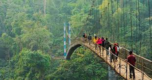

Meghalaya:
Food:
The staple food of the people is rice with spicy meat and fish preparations. They rear goats, pigs, fowl,
ducks and cows and relish their meat. . The popular dishes of Khasis and Jaintia are Jadoh,
Ki Kpu, Tung-rymbai, and pickled bamboo shoots; bamboo shoots are also a favorite dish
of the Garos.
Vegetation:
Meghalaya harbours about 3,128 species of flowering plants and contributes about 18% of the total flora
of the country, including 1,237 endemic species (Khan et al 1997). A wide variety of wild
cultivable plants, edible fruits, leafy vegetables and orchids are found in the natural forests
of Meghalaya.
Climate:
The climate of Meghalaya varies with the altitude. ... It is neither
too warm in summer nor too cold in winter, but over the plains of Garo Hills, the climate is warm and humid,
except in winter. True to its name, the Meghalaya sky seldom remains free of clouds. The average annual
rainfall is about 1,150 cm.